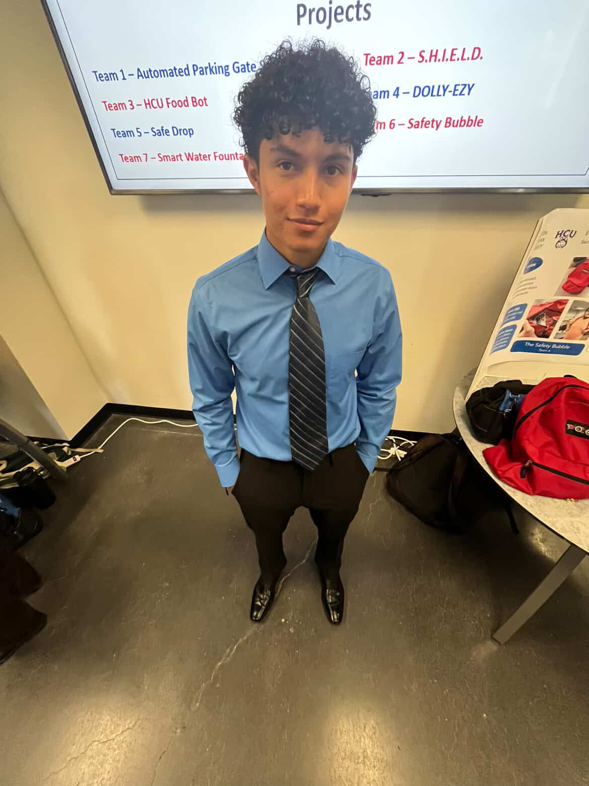

COMPUTER SCIENCE · HOUSTON, TEXAS
Hello, It's Jorge. I'm a Junior studying Computer Science.
Computer Science student at Houston Christian University interested in software engineering, backend development, artificial intelligence, networking, and automotive technology.

01
ABOUT
Learning computer science by building, experimenting, and understanding how systems work.
I'm a Computer Science student at Houston Christian University pursuing a B.S. in Computer Science with an expected graduation date of Spring 2028.
I enjoy working on practical projects that allow me to apply what I learn in class to software development, networking, backend systems, and artificial intelligence.
I'm continuing to develop my technical skills through coursework and personal projects while preparing for Summer 2027 internship opportunities.
LANGUAGES & PROGRAMMING
Python Java C SQL HTML CSS Object-Oriented Programming Data Structures & AlgorithmsTOOLS & PLATFORMS
Git GitHub Linux / Ubuntu VS Code PowerShell VirtualBox OpenSSH Flask Python Requests REST / HTTP AWS Cloud Fundamentals Ollama / Local LLMs — LearningTECHNICAL KNOWLEDGE
Software Engineering Backend Development Advanced Data Structures Database Management Systems Operating Systems Computer Architecture Computer Networks TCP/IP & OSI Model Client-Server Systems Artificial Intelligence AI Team Collaboration Homelab Infrastructure — Building Local AI / LLM Hosting — Learning Storage & Compute Infrastructure — Learning Networking Infrastructure Cyber / Hardware Projects Automotive Technology02
PROJECTS
Projects live on their own page.
A quick look at what I'm building. Select a project to jump directly to the full write-up, screenshots, technologies, and current progress.
03
EDUCATION
Houston Christian University
Bachelor of Science in Computer Science
RELEVANT COURSEWORK
CONTACT
Let's connect.
I'm currently seeking Summer 2027 internship opportunities and am always interested in connecting with people working in software and technology.
Email Me